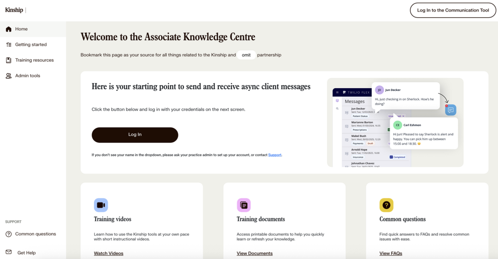
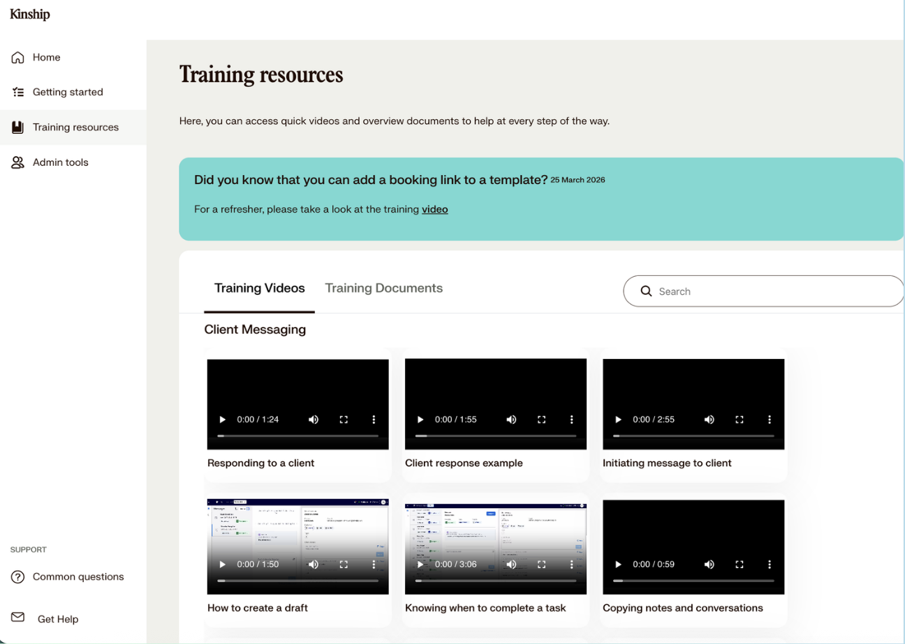
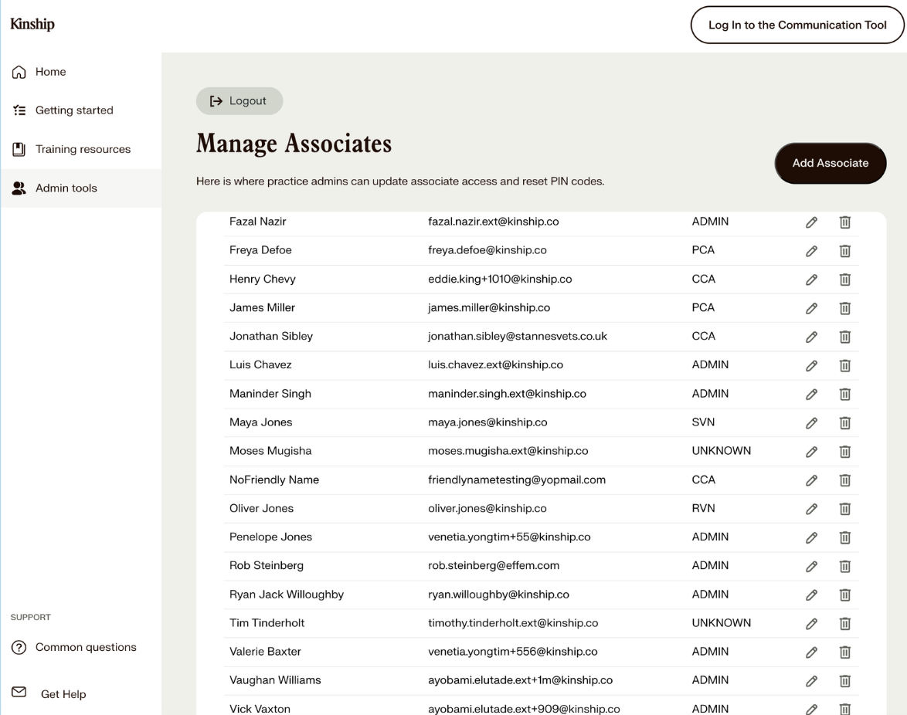

Associate
knowledge centre.
A centralized training and support hub to onboard 1,500+ associates. Streamlined access to training resources, empowered admins with self-service tools, and gave staff a structured channel for bug reporting.
1,500+
Associates Onboarded
29
Training Videos · 70+ Min
67%
New Associate Engagement Rate
82%
Clinic Satisfaction
Associate Knowledge Centre

Steps Taken
- 01 Partnered with design & creative team to develop digital and printable training materials.
- 02 Identified areas of complexity to prioritize high-impact training content.
- 03 Established a structured channel for bug reporting and self-service admin tooling.
Outputs
- 01 Produced 29 training videos (70+ minutes total) to improve accessibility and adoption.
- 02 Authored 95% of content via Contentful so the clinic ops team can update it without engineering.
- 03 Surfaced Training videos · Training documents · Common questions as first-class hub cards.
02
What the centre unlocks.
Two surfaces designed to reduce dependency on engineering: 1) learning 2) access management.

Training materials
Videos & documents grouped by topic, with a refresher banner pinned at the top.

Self-service tools
Practice admins can manage associate access and reset PIN codes.